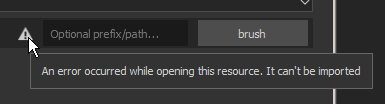
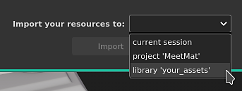
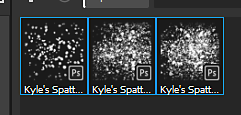

Open the import resources window.
This page gives a step by step on how to import an ABR file into Substance 3D Painter.
Open the import resources window.
The Import Resource window can be opened in three different ways:
Add the ABR file to the Import resources window.
If you didn't drag and drop the ABR file into the Assets window to open the import window, it will be empty by default.
To add the ABR file, you can either:

A warning icon can appear next to the ABR file if there are some issues with it. Such as:
Select how to import the ABR file.
At the bottom of the Import Resources window, choose where to load the ABR file:

Access the brush presets from the Shelf.

If there were no issues importing the Brush Presets, they will appear in the Assets window.
If a brush preset is based on a bitmap, the image it uses will also be available in Alpha section of the Shelf under the same name as the brush preset.